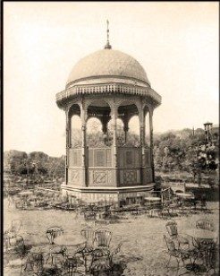

الإسلامية
القبة والشاشات المنحوتةأكثر العناصر الخمس زخرفةً — جناح تراثي بقبة خشبية وأقواس منحوتة وشاشات مشربية، يعيد إحياء المفردات الكلاسيكية للقاهرة الإسلامية بالخشب.


البرجولة الإسلامية — التصميم
صورة المشروع — تُضاف قريبًا